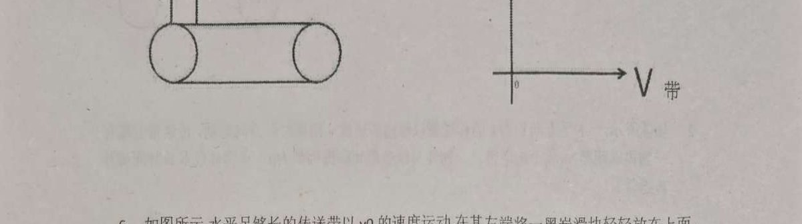

← 返回课件库
物0033
物理
传送带专题
传送带痕迹长度
昕言解题课件库
解答题
传送带专题 ⑥ 黑炭滑块 · 痕迹长度
滑块在皮带上留下的"签名"有多长？关键在相对位移！
原题

水平足够长的传送带以 $v_0$ 的速度运动，在其左端将一黑炭滑块轻轻放在上面，黑炭滑块滑动，传送到右端。已知黑炭滑块与传送带间的动摩擦系数 $\mu$，求黑炭滑块在皮带上所留下的痕迹的长度。
📝 逐步解析
点击「下一步」逐步展开解题过程
步骤1：滑块运动
滑块从静止加速，$a=\mu g$，加速到 $v_0$ 用时 $t=\dfrac{v_0}{\mu g}$。
步骤2：滑块位移
$x_{\text{块}}=\dfrac{1}{2}\mu g\,t^2=\dfrac{v_0^2}{2\mu g}$。
步骤3：传送带位移
$x_{\text{带}}=v_0\,t=\dfrac{v_0^2}{\mu g}$。
步骤4：痕迹长度
痕迹 = 相对位移 $\Delta x=x_{\text{带}}-x_{\text{块}}=\dfrac{v_0^2}{2\mu g}$。共速后无相对滑动，不再留痕。
最终答案：$\Delta x=\dfrac{v_0^2}{2\mu g}$
💡 方法总结
传送带问题通用解题步骤：
1️⃣ 判断物块与传送带的相对运动方向 → 确定摩擦力方向
2️⃣ 受力分析 → 求加速度
3️⃣ 判断是否能达到共速 → 分阶段讨论
4️⃣ 画 v-t 图辅助分析（面积=位移，斜率=加速度）
5️⃣ 注意痕迹长度 = 相对位移（不是物块位移！）